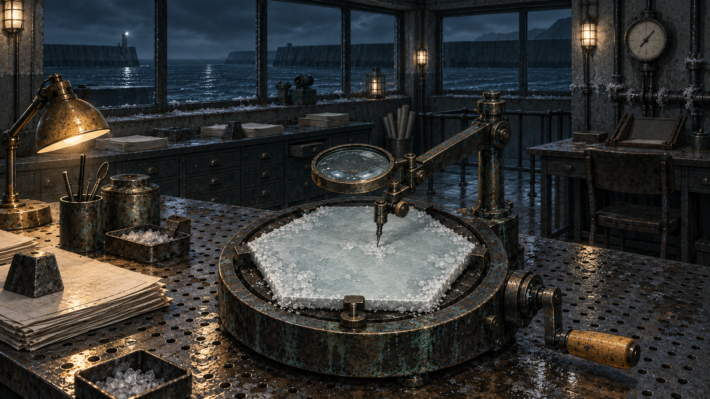

M7 / 세계관과 원본 컨셉에서
소금 위에
남은 시간.
넓은 당직실의 공기, 소금 결정의 결, 손으로 움직이는 광학 장치. 원본 컨셉의 물성에서 앞으로 만들 플레이 장면의 모습을 찾습니다.
두 영상은 향후 플레이 경험의 시각 목표입니다.01 / CINEMATIC ART TARGET
00:24은포항, 당직의 시작
바다와 방파제, 닳은 작업대와 작은 실용등. 공간에서 도구로 다가가는 시선으로 조용한 압력을 그립니다.
새 플레이 장면의 시각 목표
결을 읽고,
손으로 시험하기.
원형 베이스 위의 육각 소금 판, 확대경과 탐침, 옆으로 뻗은 크랭크. 실제 재료에 손을 대는 듯한 관찰과 조작의 감각을 설계합니다.
- 01공간에 들어서기
- 02물성을 살피기
- 03조작을 체감하기
02 / GAMEPLAY EXPERIENCE TARGET
00:32광학 작업대에서의 플레이
생성 영상으로 관찰 거리, 조작 대상, 컷의 호흡을 검토합니다. 화면 속 동작과 반응은 앞으로 구현할 경험의 목표입니다.
{kind=link}

GTI / 새 광학 작업대 키프레임
원본의 형태를,
하나의 장면으로.
초기 판독기 컨셉과 초기 당직실 컨셉 두 장을 참조했습니다. 결정 판의 육각형, 두꺼운 원형 베이스, 관절식 광학 암과 크랭크가 장면의 중심입니다.
키프레임 자세히 보기 ↗영상 이후, 게임으로 옮기는 순서
제작 인계 가이드 · 영상 밖의 후속 작업 흐름
- 01 / 기준세계관·원본 컨셉
공간, 물성, 도구의 형태를 정식 원본에서 가져옵니다.
- 02 / 검토 자료영상 아트 목표
시선의 흐름과 조작의 감각을 영상으로 검토합니다.
- 03 / 다음 제작GTI 텍스처·리소스
채택한 장면에서 필요한 표면과 시각 리소스를 제작합니다.
- 04 / 후속 구현프리팹 재구성
새 시각 목표에 맞춰 구조와 재료, 반응을 다시 구현합니다.
이 흐름은 제작팀의 다음 작업 순서입니다. 새 키프레임은 생성되었으며, 텍스처 제작과 프리팹 재구성의 완료를 뜻하지 않습니다. 각 단계에서 원본과의 일관성, 실제 조작 가능성, 판정과 연출의 연결을 검증합니다.